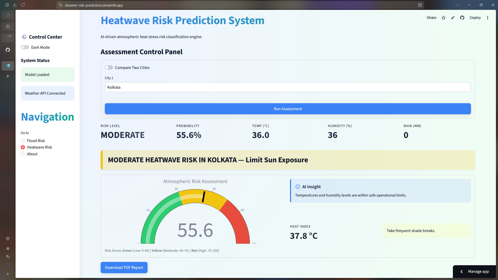
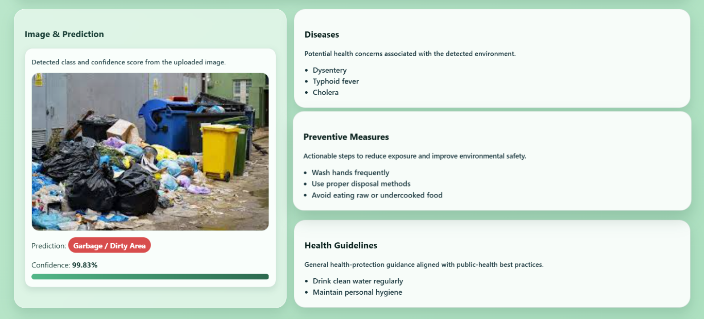
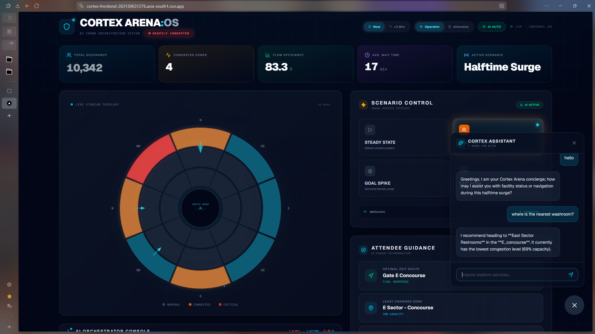

AI & Machine Learning / Software Engineering / Research & Systems
I build ML systems that solve real problems — disaster risk prediction, environmental health AI, and data-driven decision tools. Currently a 2nd-year CSE student specialising in AI & ML with a minor in Cybersecurity.
I'm a Computer Science undergraduate at IEM Kolkata, majoring in AI & Machine Learning with a minor in Cybersecurity. My focus is applied ML — building end-to-end systems that move from raw data to deployed, usable tools.
My work deals with high-stakes problems: predicting natural disasters before they happen, detecting disease risk from environmental images, classifying health risk factors in under-resourced areas. The engineering has to be reliable because the problems are real.
Outside of project work I study algorithms, earn certifications, compete in hackathons, and explore research-driven problem solving at the intersection of AI, public health, and environmental science.
I'm a Computer Science undergraduate at IEM Kolkata specializing in AI & Machine Learning with a minor in Cybersecurity.
I build end-to-end ML systems focused on disaster prediction, environmental risk analysis, and applied AI.
My interests lie at the intersection of AI, public health, environmental science, and research-driven problem solving.


CNN + RAG system for detecting disease-associated environmental hazards and generating preventive health advisories.

Applied research projects, conference submissions, and ongoing technical investigations
Research on detecting disease-associated environmental hazards from images using CNNs and generating context-aware preventive health advisories through a Retrieval-Augmented Generation (RAG) pipeline.
Research on real-time flood and heatwave risk assessment using machine learning, live meteorological APIs, and decision-support frameworks for localized hazard monitoring.
Research and development of machine learning techniques for multi-source anomaly detection, threat monitoring, and real-time cybersecurity analytics using interactive dashboard systems.
Building predictive and clustering models using Python and Scikit-learn on healthcare and real-estate datasets. Focused on preprocessing, model selection, and evaluation.
Completed AI/ML training covering data preprocessing, model evaluation, and model development. Built and deployed a disaster risk prediction application using Streamlit.
Pre-Final Round · Top 50 Teams from IEM
Led a team through problem definition, solution architecture, and technical submission for India's largest student hackathon. Reached the pre-final stage, placing in the top 50 teams from IEM. The process involved rapid prototyping, cross-functional collaboration, and presenting a deployable technical solution under competition conditions.
Top 1% nationally · Perfect 100% score across all assessments.
90% score · Elite + Gold certification.
75+ DSA problems solved across LeetCode, GeeksforGeeks, and HackerRank.
Consistent academic performance through 3 semesters alongside active project and internship work.
Cross-domain expertise in anomaly detection, network security, and secure system design.
Looking for roles in ML engineering, AI research, software development, and data science. If you're building something that matters, I'd love to hear about it.
Opens your default email client with the message pre-filled.